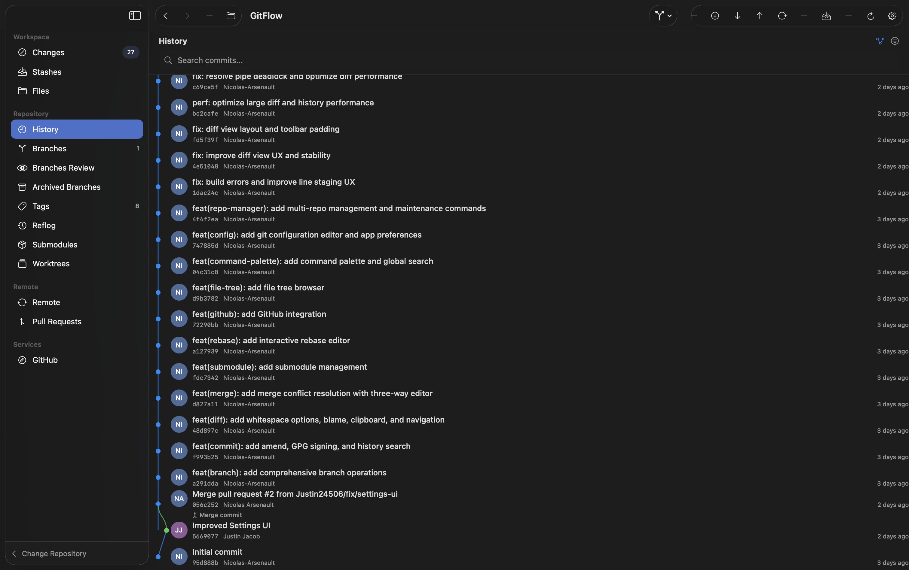

The most advanced diff engine for macOS
Powered by SwiftSyntax AST parsing. GitFlow doesn't just show you what lines changed—it shows you what code changed.
-
Structural Diff View
See added, modified, and removed functions, classes, and methods—not just lines.
-
Semantic Equivalence Detection
Automatically detect when changes are just reformatting or reordering.
-
Change Impact Analysis
See which callers and dependents are affected by your changes.
-
Word-Level Highlighting
Smart tokenization identifies exactly what changed within each line.
-
Split & Unified Views
Toggle between side-by-side and inline diff modes with synchronized scrolling.
